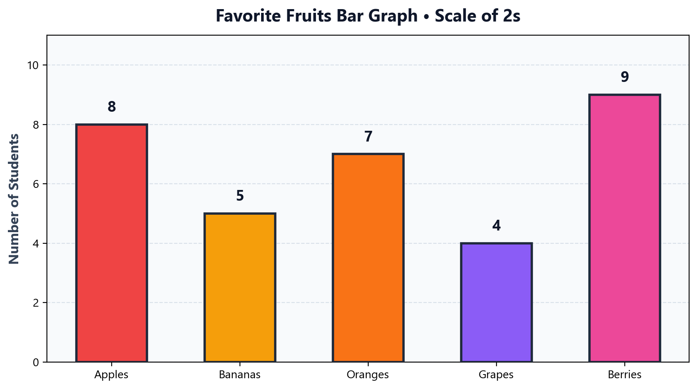
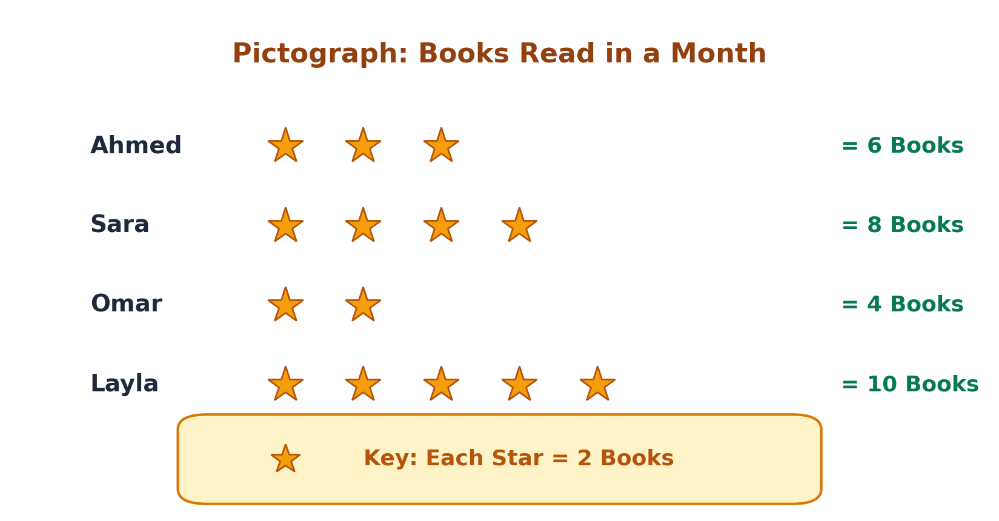
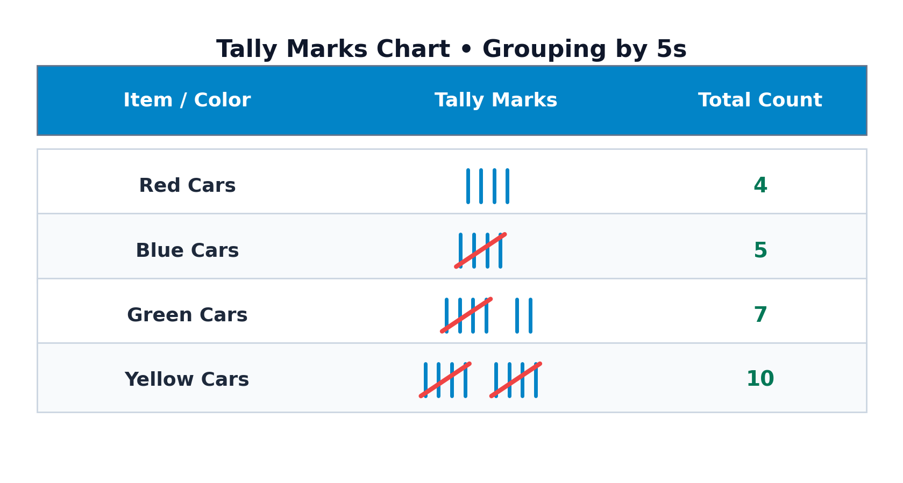
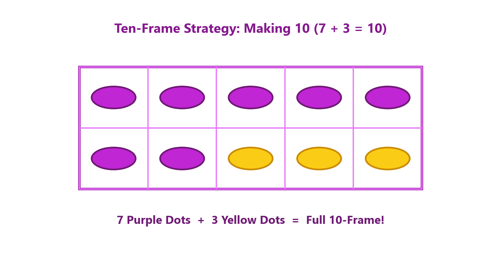
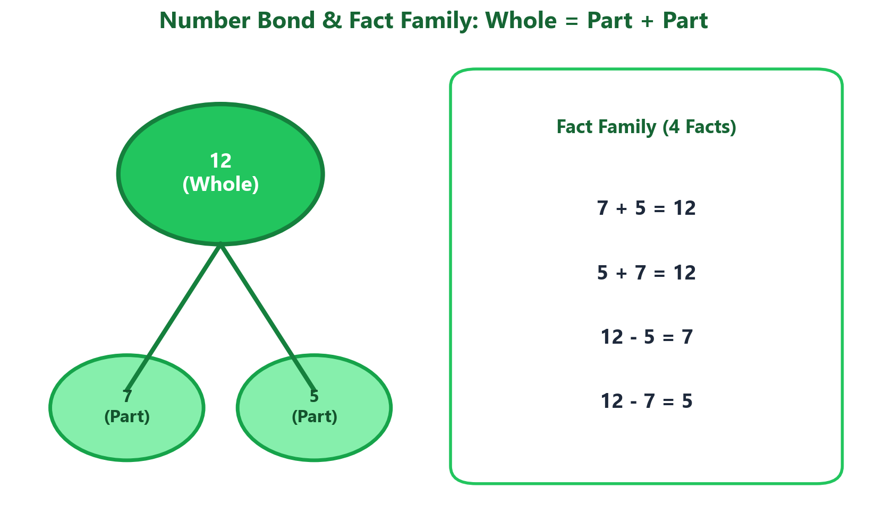
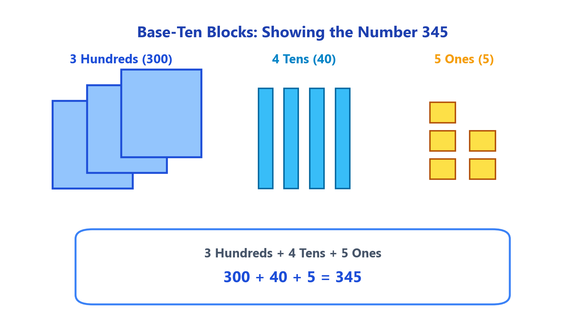
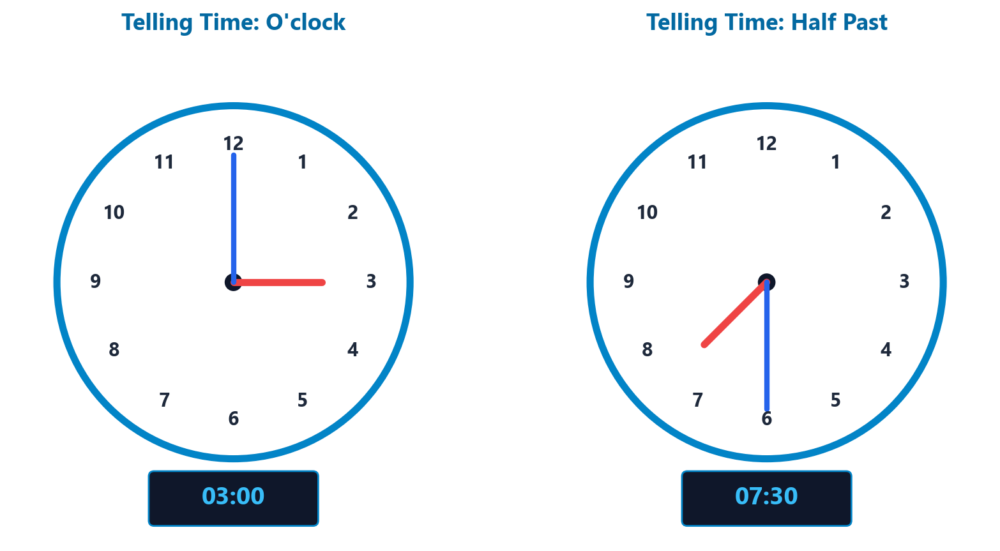
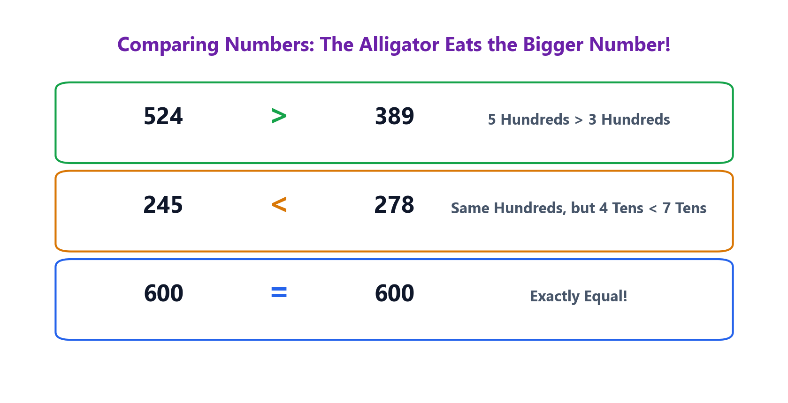
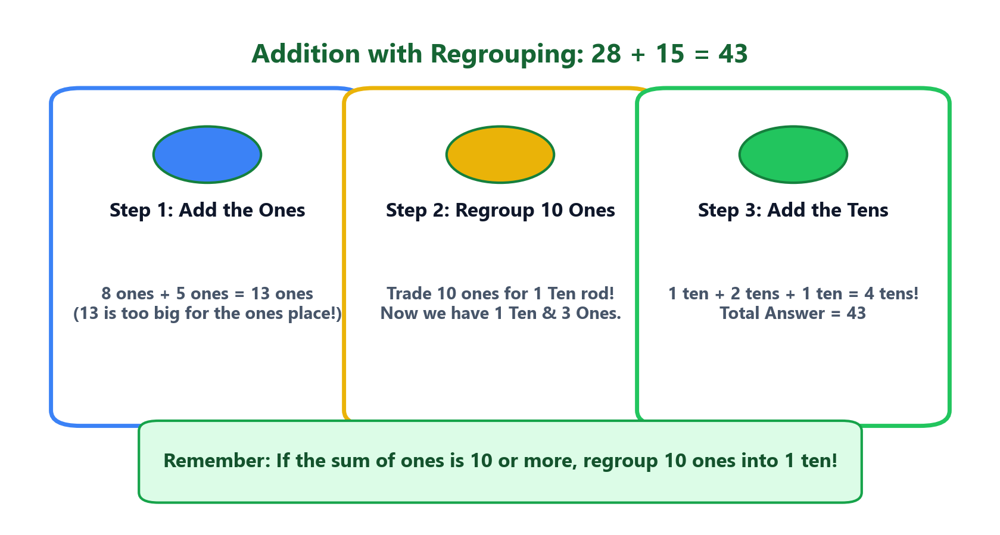

دليل الرياضيات التفاعلي الشامل (Math Primary 2)
الفصول التسعة كاملة: من الرسوم البيانية حتى الحساب الذهني، بالصور التوضيحية من كتاب المعاصر وروابط الشرح والملخصات.
Bar graphs, pictographs, frequency tables, tally marks, scale of 1s and 2s, comparing data.



Vertical addition algorithms, number lines, making 10 strategy, doubles and doubles plus 1.


Vertical subtraction, fact families, counting down strategy, inverse relationship with addition.

Telling time on analog and digital clocks (o'clock, half past, quarter past), elapsed time calculations.

Measuring lengths, units: Meter (m), Centimeter (cm), Millimeter (mm), conversions (1m = 100cm).

3-digit numbers, place value (Hundreds, Tens, Ones), comparing (378 < 397) and ordering numbers.

Measuring liquid volume, units: Liter (L), Deciliter (dL), Milliliter (mL), real-world volume benchmarks.
Advanced vertical addition with carrying and subtraction with borrowing across hundreds, tens, and ones.

Associative property (e.g. (2+8)+11 = 21), friendly numbers, decomposing numbers for lightning calculations.
كل ملازم الامتحانات والمراجعة النهائية للمادة مع نماذج الإجابة التفصيلية.